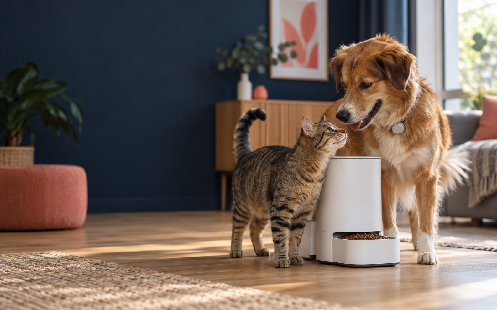

01
Für Katzenmenschen
Katzentechnik
Mehr Komfort bei Fütterung, Trinken und Hygiene – besonders wertvoll in Mehrkatzenhaushalten.
43 %halten zwei oder mehr Katzen

Orientierung statt Feature-Flut
Wir prüfen smarte Helfer für Katze und Hund auf das, was im Alltag zählt: Nutzen, Sicherheit und einfache Bedienung.
Wo möchtest du starten?
Wähle dein Tier und entdecke die Produktgruppen mit dem größten praktischen Nutzen. Jeder Ratgeber zeigt dir, worauf du vor dem Kauf achten solltest.
Mehr Komfort bei Fütterung, Trinken und Hygiene – besonders wertvoll in Mehrkatzenhaushalten.
Mehr Sicherheit unterwegs, ein wachsames Auge zu Hause und praktische Unterstützung bei Pflege und Bewegung.
Unsere Themen
Komfortabel bei mehreren Katzen – wenn Größe, Reinigung und Sicherheit wirklich passen.
Präzise Ortung, verlässliche Verbindung und ein Akku, der zum Alltag deines Hundes passt.
Planbare Mahlzeiten und passende Portionen – auch wenn du einmal später nach Hause kommst.
Fließendes Wasser kann zum Trinken animieren. Leise Pumpen und leichte Reinigung sind entscheidend.
Ein ruhiger Blick nach Hause – mit sinnvoller Privatsphäre und Benachrichtigungen ohne Dauerfeuer.
Kontrollierter Freigang und kein fremder Besuch – passend zu Chip, Wandstärke und Gewohnheiten.
Weniger lose Haare im Zuhause – mit angenehmer Lautstärke und Aufsätzen für das passende Fell.
Beschäftigung mit Maß: sichere Distanzen, passende Ballgröße und bewusste Pausen.
Live von Amazon.de
Produkte werden geladen …
Alle Angaben in diesem Bereich stammen direkt aus der Amazon Creators API. Farbvarianten desselben Modells werden zusammengefasst.
Preise und Verfügbarkeit können sich ändern. Maßgeblich ist das Angebot bei Amazon zum Kaufzeitpunkt.
Kaufhilfe
Starte beim Alltag deines Tieres, nicht bei der längsten Funktionsliste. Ein klarer Bedarf führt schneller zum passenden Gerät – und schützt vor teuren Fehlkäufen.
Alle Ratgeber ansehen ↑Weniger kann mehr
Fast neun von zehn Befragten in Deutschland wünschen sich vor allem präzise Ortung statt einer überladenen Funktionssammlung.
Zur Pet-Tech-Studie 2025 ↗Unser Prüfprinzip
Der Nutzen muss im Alltag spürbar sein.
Tierwohl, Material und Datenschutz zählen.
Gute Technik funktioniert ohne Handbuch-Marathon.
Filter, Akkus und Abos gehören zum Gesamtpreis.